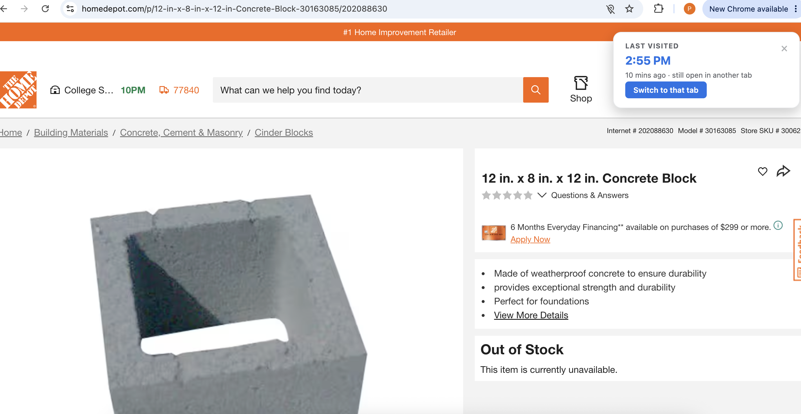
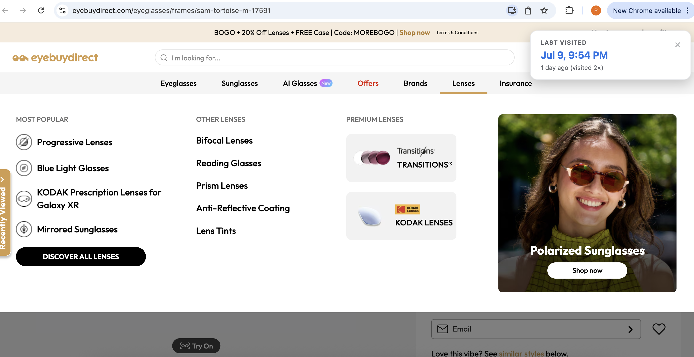

A Chrome Extension
Wait, didn't I visit this site a few days ago?
Last Visited shows you when you last visited a page and how many times — so if you already passed on those sunglasses, you don't have to look twice.

Two ways it saves you a tab
No settings to configure.


Last Visited
Open duplicate tabs
Pavestone Step Stone 2Switch
Visited before
Jul 4, 2:03 PM7d ago
Runs entirely on your device
Nothing you visit ever leaves your browser
Your privacy comes first. Last Visited doesn't save or store any of your data. You know why ? Because there is no backend attached to this. hehe :-